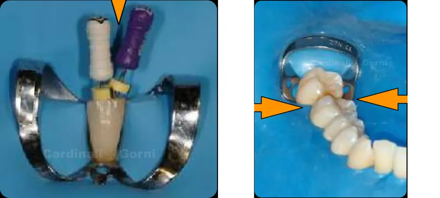
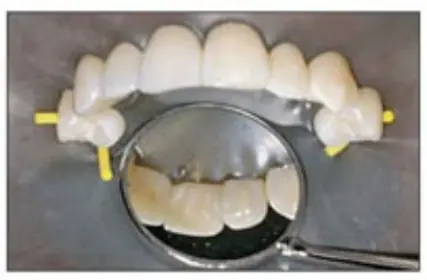

نسخه استخراجشده؛ ترجمه یا تأیید علمی انجام نشده است. وضعیت: captured
بیمار ۳۰ سالهای با پالپیت مولر دوم پایین آمده است. پوسیدگی به سطح مزیال هم رسیده و قرار است درمان ریشه و ترمیم کلاس II را در یک جلسه انجام دهی. روی ورق یک سوراخ میزنی یا چند سوراخ؟

پیش از برداشتن پانچ، اول تصمیم بگیر چند دندان را ایزوله میکنی و کلمپ روی کدام دندان مینشیند. این تصمیم از نوع درمان میآید. هرچه دندانهای بیشتری بیرون باشند، دسترسی بازتر است.
در کارهای کوچک و در کودک، سوراخها را به کمترین شمار لازم محدود کن. برای ترمیمهای بزرگتر، وسعت کامل را در اسلاید بعد میبینی.
چرا دندانهای قدامی در ترمیم خلفی؟ ورق در قوس صاف میماند، برای انگشت و ابزار جا باز میشود و لبهی انسیزال دندانهای خشک تکیهگاه انگشت میشود. دید تو و دستیار هم بهتر است.

اشتباه رایج: در ترمیم خلفی فقط خود دندان و یکی دو دندان کنارش را بیرون آوردن. ورق روی میدان کار میافتد و جای تکیهی انگشت نمیماند. قاعده: دستکم یک دندان دیستالتر از دندان کار، تا ثنایای طرفی سمت مقابل.